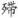

：音替，困慵。 ⑪荀令：三国时荀彧，曾为尚书令。曹操称其为荀令君。习凿齿《襄阳记》：“荀令君至人家，坐幕三日，香气不歇。”李商隐《牡丹》诗：“荀令香炉可待薰。”可知其喜薰香。 ⑫篝：薰香所用的薰笼。作动词用。
：音替，困慵。 ⑪荀令：三国时荀彧，曾为尚书令。曹操称其为荀令君。习凿齿《襄阳记》：“荀令君至人家，坐幕三日，香气不歇。”李商隐《牡丹》诗：“荀令香炉可待薰。”可知其喜薰香。 ⑫篝：薰香所用的薰笼。作动词用。天 香
王沂孙
龙 涎 香①
孤峤蟠烟② ，层涛蜕月③ ，骊宫夜采铅水④ 。汛远槎风⑤ ，梦深薇露⑥ ，化作断魂心字⑦ 。红瓷候火⑧ ，还乍识、冰环玉指⑨ 。一缕萦帘翠影，依稀海天云气。 几回

娇半醉⑩ ，剪春灯、夜寒花碎。更好故溪飞雪，小窗深闭。荀令如今顿老⑪ ，总忘却、尊前旧风味。漫惜余薰，空篝素被⑫ 。
【注释】
①龙涎香：抹香鲸病胃的一种分泌物，得之于海上，因称龙涎或龙泄，和以其他香物。其香加烈，经久不散，为一种珍贵香料。宋元时，也用作薰香。古人则以为“出大食国西海之中，上有云气罩护，则下有龙蟠洋中大石，卧而吐涎，飘浮水面，为太阳所烁，凝结而坚，轻若浮石，用以和众香，焚之，能聚香烟，缕缕不散。……鲛人采之，以为至宝，新者色白……入香焚之，则翠烟浮空，结而不散”（《岭南杂记》）。 ②峤：山锐而高，此指海洋中的礁石。蟠，蟠绕。 ③蜕月：谓月映于层涛，粼粼波光如从鳞甲中蜕退而出。 ④骊宫：传说骊龙所居之处。铅水：指龙（实为鲸）所吐出的白涎。 ⑤汛远槎风：意谓龙涎已随采香的人所乘的木筏（槎）而远去；槎须趁潮汛、乘风力而行，故谓。 ⑥梦深薇露：意谓和以蔷薇水，使龙涎香气更烈，如使其进入深深的梦境。 ⑦心字：一种制成“心”字形状的篆香。杨万里《谢胡子远……报以龙涎香》诗：“遂以龙涎心字香，为君兴云绕明窗。” ⑧红瓷候火：意谓等候其用慢火焙成，以红瓷盒贮之。 ⑨冰环玉指：指龙涎香制成如环如指的形状。 ⑩
：音替，困慵。 ⑪荀令：三国时荀彧，曾为尚书令。曹操称其为荀令君。习凿齿《襄阳记》：“荀令君至人家，坐幕三日，香气不歇。”李商隐《牡丹》诗：“荀令香炉可待薰。”可知其喜薰香。 ⑫篝：薰香所用的薰笼。作动词用。
【语译】
大海中，孤立的礁石上有烟雾在蟠绕，层层波涛如闪闪的鳞甲正在蜕退着月光，深夜里鲛人来此骊宫采集如铅水般的龙涎。于是这宝物便趁着潮汛，随着风中的木筏远去了，它在深沉的梦境中发现自己与蔷薇花露混合在一起，化作了令人消魂的心字形篆香。红色的瓷盒等待着烘焙的火候成了来盛装这奇香，还让人初次见到它制成后如同冰环玉指的模样。将香点燃，便见有一缕翠绿色的烟雾升起，萦绕着帘幕，仿佛是飘浮在大海上空的云气。
有多少次，那娇懒半醉的美人，在寒冷的春夜里慢慢地把灯花剪碎，陪伴着她的就是这香。在那故乡的溪边，空中飞着雪花，小屋子的门窗都紧紧关闭，那是更合适这香的地方。素以爱薰香而闻名的荀令，展眼间，现在已如此衰老了，他老是忘记从前饮酒前爱焚香薰衣、保持高雅风味的习惯，连香也不再焚了。既然如此，又何必再徒劳无益地为舍不得这残余的香气而在空薰笼上覆一条素被呢？
【赏析】
王沂孙曾与周密、张炎、陈恕可、唐珏、王易简、冯应瑞、李居仁、仇远等十几位南宋遗民结社倡和，择调填词，分别咏龙诞香、白莲、莼、蝉、蟹等物，藉以寄亡国之痛，结集为《乐府补题》，这首《天香·龙涎香》词被编录于开卷第一首，可见是其极用力、极成功之作。
词上阕写龙涎香的产地、采集、制造、形状和焚爇。“孤峤”二句，说龙涎生于海上。“峤”，当指传说中蟠着龙的“洋中大石”。“烟”，即写其“上有云气罩护”，以近代科学眼光看，其实就是抹香鲸呼吸时喷出水面的水柱水气。又因传说龙“枕石而睡”“卧而吐涎”，故写“月”夜。以“蟠”“蜕”二字，形容烟云聚绕，月光波动，择字极精心，未写龙而龙若呼之欲出，而“蜕”字尤见功力，盖月下层波，望如鳞甲，波涌向前，则水中之月便如节节后退，此所以比龙蛇之蜕皮也，非静观其景者不能知。“骊宫”句，言采集，明点龙。“铅水”之喻，因龙涎“新者色白”“凝结而坚”而使用。“汛远槎风”，说被载取而远去。舟船须趁潮汛、借风力而始行，以“槎”代“舟”，用张华《博物志》“有人居海上，年年八月见浮槎去来不失期”故事，增加了传奇色彩。“梦深薇露”，说被和以香料制造。蔡絛《铁围山丛谈》云：“采蔷薇花蒸气成水……积而为香……大食国蔷薇水虽贮琉璃缶中，蜡密封其外，然香犹透彻，闻数十步；洒着人衣袂，经十数日不歇。”此正制龙涎香时，与之共研和的重要香料。龙涎因之而“梦深”，是说其有此奇遇，真是意想不到的，赋予香以人情，启人想像无数。“化作断魂心字”句，可作梦中所经历来看，其实际制成，犹有下文。“断魂”二字写出龙涎为能成为绝品而自喜自豪，此正梦之深也。
“红瓷候火”，说其焙制和贮存。制香用慢火，须看火候，待其“稍干带润”，即可“入瓷盒窨”。“冰环玉指”，谓其制成的形状，“冰”“玉”，因色白而用，“环”作圆形，“指”为条状，两者同用，则将香比之为有纤纤玉指的佳人，故用“还初识”三字。“一缕萦帘翠影，依稀海天云气”，是说焚爇之状。所谓“入香焚之则翠烟浮空，结而不散”。至此，上阕描述龙涎香本身告一段落，故将室内“萦帘”之翠烟，比之为“海天云气”，以回应篇首，仿佛海峤烟云、月夜波涛之景象又再现于眼前。
下阕借人事咏香，以转入抒情。“几回 娇半醉，剪春灯、夜寒花碎。”此谓龙涎香焚于闺阁，与娇慵女子作伴。寒夜而“半醉”，又坐剪灯花，岂待郎不至或寂寂春宵惹其相思情怀耶？奇香极贵重，故非朱门大户人家不能用。“几回”，言其常也，然问句语气间，已见出是往昔的情景。“更好故溪飞雪，小窗深闭。”说得近了，该是作者自己，只是咏物于人事宜泛而不可太实，所以毋须明说。“故溪”，故园之清溪也。雪夜小窗下，吟咏读书，焚上一炉，异香满屋，温暖如春，岂不大好。就香而言，其所以觉“更好”者，乃因为“深闭”也，即陈敬《香谱》所谓宜焚于“密室无风处”。“荀令”二句，已是分明寄慨了，也是可以作为自比自述而又毋须坐实的。荀令已老，其“忘却”之“旧风味”，即旧时待客必衣着薰香之高雅风味也，则今之落拓不修边幅；已无风情雅趣之状可想。结尾“漫惜余薰，空篝素被”八字，顺流而下。香即不焚，薰衣被所用之“篝”（薰笼）亦当闲置，今为惜尚残存于篝间的余香，而将“素被”覆置于“空篝”之上，岂非徒劳无益（“漫”）！藉此寄托南宋既亡，旧梦难温的悲哀感慨。
娇半醉，剪春灯、夜寒花碎。”此谓龙涎香焚于闺阁，与娇慵女子作伴。寒夜而“半醉”，又坐剪灯花，岂待郎不至或寂寂春宵惹其相思情怀耶？奇香极贵重，故非朱门大户人家不能用。“几回”，言其常也，然问句语气间，已见出是往昔的情景。“更好故溪飞雪，小窗深闭。”说得近了，该是作者自己，只是咏物于人事宜泛而不可太实，所以毋须明说。“故溪”，故园之清溪也。雪夜小窗下，吟咏读书，焚上一炉，异香满屋，温暖如春，岂不大好。就香而言，其所以觉“更好”者，乃因为“深闭”也，即陈敬《香谱》所谓宜焚于“密室无风处”。“荀令”二句，已是分明寄慨了，也是可以作为自比自述而又毋须坐实的。荀令已老，其“忘却”之“旧风味”，即旧时待客必衣着薰香之高雅风味也，则今之落拓不修边幅；已无风情雅趣之状可想。结尾“漫惜余薰，空篝素被”八字，顺流而下。香即不焚，薰衣被所用之“篝”（薰笼）亦当闲置，今为惜尚残存于篝间的余香，而将“素被”覆置于“空篝”之上，岂非徒劳无益（“漫”）！藉此寄托南宋既亡，旧梦难温的悲哀感慨。
此词叶嘉莹曾著文详析之，所见极精当，拙评得益于该文不少。叶氏尚提到会稽盗发南宋诸陵，理宗被悬尸沥取水银及厓山覆亡，陆秀夫负帝蹈海事，并论及本词是否有寄托此类史事之可能，语谨慎而多卓见，可参见《迦陵论词丛稿》诸作。